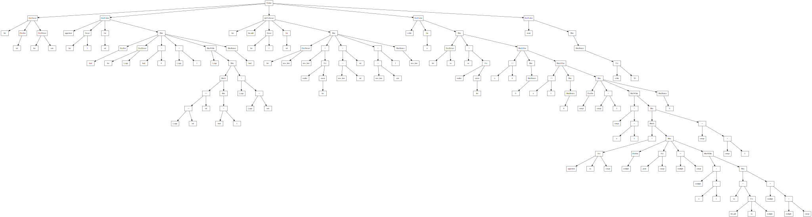
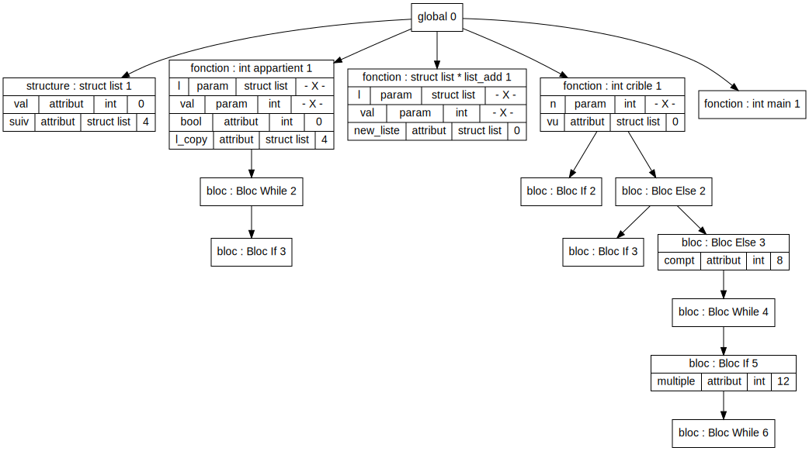

Test : Test_Semantique/crible.exp
Code
struct list {
int val;
struct list * suiv;
};
int appartient(struct list * l, int val) {
int bool;
struct list * l_copy;
bool = 0;
l_copy = l;
while(l_copy) {
if (l_copy->val == val) {
bool = 1;
}
l_copy = l_copy->suiv;
}
return bool;
}
struct list * list_add(struct list * l, int val) {
struct list * new_liste;
new_liste = malloc(sizeof(struct list));
new_liste->val = val;
new_liste->suiv = l;
return new_liste;
}
int crible(int n) {
struct list * vu;
vu = malloc(sizeof(struct list));
if (n == 0) {
return 0;
}
else if (n==1) {
return 0;
}
else {
int compt;
compt=2;
while (compt < n+1) {
if (! appartient(vu, compt)) {
int multiple;
print(compt);
multiple = compt;
while (multiple < n+1) {
vu = list_add(vu, multiple);
multiple = multiple + compt;
}
}
compt = compt + 1;
}
return 0;
}
}
int main() {
return crible(50);
}
Erreur
Aucune erreur
AST

TDS
